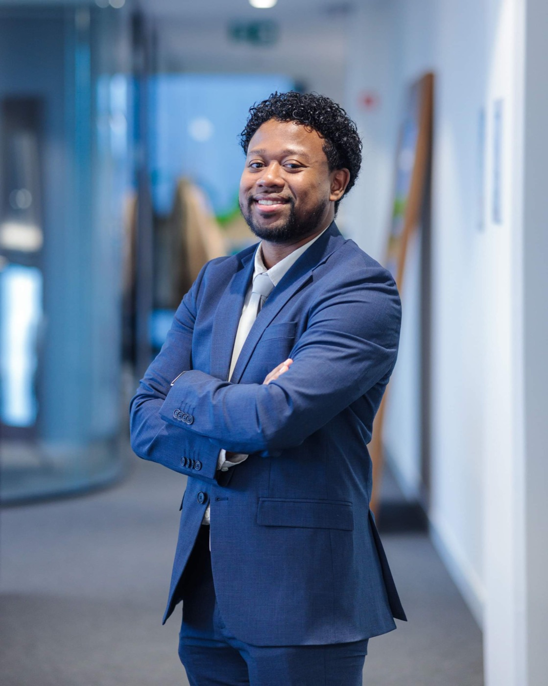

PHARMACEUTICAL MANUFACTURING
Forecasting & anomaly detection
Developing predictive forecasting and real-time anomaly detection solutions for pharmaceutical manufacturing at GSK.
Hi, I’m Kevin. I’m a
I turn complex challenges into reliable AI products. From the first conversation to the model in production.

01 / SELECTED WORK
PHARMACEUTICAL MANUFACTURING
Developing predictive forecasting and real-time anomaly detection solutions for pharmaceutical manufacturing at GSK.
RAILWAY INFRASTRUCTURE
Fine-tuned YOLO models on custom-annotated datasets for automated railway component defect detection.
APPLIED GENERATIVE AI
Developing retrieval-augmented generation systems, including a RAG anomaly platform, for pharmaceutical manufacturing.
XR RESEARCH & ENGINEERING
Designed a novel hand-gesture VR locomotion system in Unity and C#, with a focus on reducing motion sickness.
Selected professional contributions. Visuals are conceptual illustrations.
02 / EXPERIENCE
Work with stakeholders to turn operational challenges into production-grade AI products, leading delivery from discovery and modelling through engineering, deployment, and user adoption.
Full-time · Wavre, Belgium · Hybrid
Full-time · Brussels, Belgium · Hybrid
Full-time · Brussels, Belgium · Hybrid
Worked in the Emerging ICT team, investigating how new technologies could support Infrabel.
Internship · Brussels, Belgium · Hybrid
Teach programming, data science, and AI to learners aged 6–18 through small projects and games they can test and showcase.
Part-time · Brussels, Belgium
Self-employed · Brussels, Belgium · Hybrid
03 / A LITTLE ABOUT ME
I’m an ML engineer and data scientist based in Brussels, working at the intersection of research and real-world delivery.
My foundations are in classical machine learning, computer vision, and time-series modelling, complemented by hands-on work with generative AI and LLM systems. I enjoy taking an idea all the way through to something people can use.
Alongside engineering, I teach programming and AI to young learners. Making complex ideas understandable is part of the work.
Vrije Universiteit Brussel · 2021–2024
Cum Laude · GPA 76%Vrije Universiteit Brussel · 2018–2021
French & Dutch Native (C2)
English Professional (C2) · German A2
04 / GET IN TOUCH